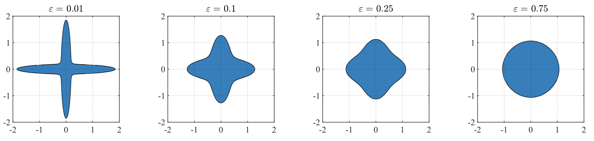

In optimization-based approaches to inverse problems and statistical inference, regularizers are added to an objective to promote desired structural properties in solutions. Convex regularizers—such as the ℓ1 norm for sparsity or the nuclear norm for low rank—are computationally attractive but limited in the structures they can represent. My research studies the broader class of regularizers defined by Minkowski functionals of star bodies: compact sets that include both convex bodies and nonconvex shapes. This class is rich enough to capture complex data structure while remaining amenable to geometric analysis.

A central question is: given data drawn from an unknown distribution, what is the optimal regularizer for recovering signals from that distribution? In joint work with Oscar Leong, Yong Sheng Soh, and Venkat Chandrasekaran, we characterize the optimal star-body regularizer for a data source and identify the geometric properties of the data distribution that determine whether the optimal regularizer is convex or nonconvex. We also study how well optimal regularizers can be learned from data using critic-based methods that use observed data and the known forward map to help guide the choice of regularizer.
In practice, the true data distribution is unknown and may shift between training and deployment. We study distributionally robust variants of the regularizer learning problem, in which the regularizer is chosen to perform well across an ambiguity set of distributions. We characterize optimal robust regularizers and relate robustness considerations to the regularity and convexity of the regularizer.